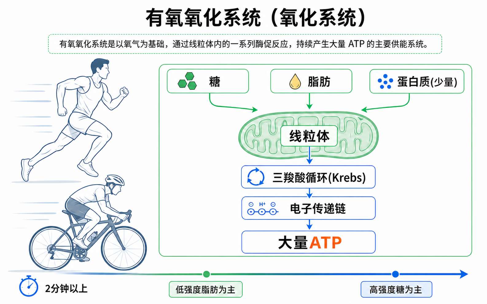

Day 24 · 能量系统-氧化系统
一句话总结
氧化系统像线粒体里的慢炖发电厂: 它产能速度不如 ATP-PCr 和糖酵解快，但能把糖、脂肪和少量蛋白质在线粒体内充分氧化，换来更大量 ATP，所以支撑长跑、骑行、稳定有氧和组间恢复。

核心要点
-
氧化系统: 用氧气在线粒体内充分分解底物，产生大量 ATP。
先抓结论: 氧化系统不是“低强度才开机”，而是一直参与供能；运动越久、强度越可控，它贡献越大。底层机制
字面意思
氧化 = 底物在有氧条件下逐步释放能量。系统主要在线粒体内完成，产物包括 ATP、二氧化碳和水。
大白话
像慢炖锅：出餐慢一点，但能把食材榨得很干净，特别适合长时间稳定输出。
考试含义
题干出现 2 分钟以上、耐力、低到中等强度、线粒体、脂肪氧化，优先想到氧化系统。
肌肉真正直接使用的仍是 ATP。氧化系统负责把糖、脂肪和少量蛋白质拆成可进入线粒体的中间产物，再经过一系列反应把能量转移到 ATP 上。
训练含义基础有氧、长距离耐力、循环训练的恢复段、组间恢复，都离不开氧化系统。氧化能力越好，同样强度下越不容易早早堆积代谢压力。
-
三羧酸循环(Krebs): 在线粒体中进一步拆解燃料，把高能电子交给后续系统。
先抓结论: Krebs 循环不是直接“制造最多 ATP”的地方，它更像把燃料拆开并装上运输车，送去电子传递链发电。真实例子
字面意思
三羧酸循环又叫 Krebs cycle。糖和脂肪分解后形成乙酰辅酶 A，进入循环，产生二氧化碳和携带能量的电子载体。
大白话
像加工厂前段：先把原料拆开、打包、贴上能量标签，再送到真正的大电站。
为什么影响训练
线粒体数量、酶活性和供氧能力越好，燃料处理越顺，耐力和高强度后的恢复越稳。
稳定跑步时，糖酵解产生的丙酮酸可转为乙酰辅酶 A，脂肪酸也能通过β氧化变成乙酰辅酶 A，最后都汇入 Krebs 循环。
常见误解❌以为 Krebs 只属于化学考试，健身不用懂。✅其实它解释了为什么有氧训练能提高线粒体能力，也解释了为什么耐力不是只靠“意志硬扛”。
-
电子传递链: 在线粒体内膜上利用氧气，完成大部分 ATP 生产。
先抓结论: 氧气在这里很关键。没有足够氧气，电子传递链难以顺畅运行，氧化系统产 ATP 的优势就发挥不出来。
底层机制环节 发生什么 训练判断 电子进入 Krebs 循环等环节把高能电子送到线粒体内膜。 像把燃料票送进发电站。 建立梯度 电子移动带动质子梯度形成，能量被暂时储存。 像水坝蓄水，准备推动涡轮。 合成 ATP ATP 合酶利用梯度，把 ADP 重新合成 ATP。 产量大，适合长时间输出。 电子传递链是氧化系统 ATP 产量最高的部分。氧气作为最终电子受体，帮助整条链持续运转，所以呼吸、心血管运输和肌肉用氧能力都会影响耐力表现。
常见误解❌以为有氧只等于“呼吸很轻松”。✅其实有氧能力包含肺通气、心脏泵血、毛细血管供血、线粒体处理和酶活性，任何一环弱都会限制输出。
-
底物切换: 低强度更偏脂肪，高强度更偏糖，但不是二选一。
先抓结论: “燃脂区”不是只烧脂肪，“高强度”也不是不烧脂肪。身体同时用多种燃料，只是比例变化。
真实例子强度状态 主要倾向 原因 低强度长时间 脂肪比例高 脂肪库存大，氧化慢但耐用，强度低时来得及处理。 中等强度 脂肪和糖都明显参与 能量需求升高，糖的供能速度优势开始重要。 高强度 糖比例升高 糖分解速度更快，更适合快速 ATP 需求。 慢走和轻松骑行时，脂肪供能比例较高；节奏跑或爬坡骑行时，糖的比例上升；冲刺时 ATP-PCr 和糖酵解贡献更突出。
常见误解❌以为只要低强度脂肪比例高，减脂就一定最好。✅其实减脂看长期能量平衡、总消耗、饮食和可持续性，不只看当下脂肪供能比例。
-
持续时间: 2 分钟以上运动中，氧化系统贡献逐步变成主角。
先抓结论: 不是到了 2 分钟才突然启动氧化系统，而是 2 分钟以上时，它的相对贡献通常越来越大。训练含义
0-10 秒
ATP-PCr 最突出，适合单次爆发、短冲刺、大重量单次。
30 秒-2 分钟
糖酵解压力明显，常见于 400 米跑、多次高强度间歇。
2 分钟以上
氧化系统越来越关键，支撑长跑、长骑、稳定有氧和长时活动。
如果目标是耐力基础，训练不该每次都冲到崩溃。大量可持续的低到中等强度训练，能累积线粒体、毛细血管和脂肪氧化适应。
常见误解❌以为强度越高越能练有氧。✅其实高强度能刺激心肺和糖酵解，但氧化基础也需要足够可恢复、可重复的稳定训练量。
-
训练应用: 氧化能力决定耐力表现，也影响高强度训练后的恢复速度。
先抓结论: 氧化系统不只是跑马拉松的人才需要。力量训练组间恢复、HIIT 间歇恢复、日常体能底盘都靠它托底。
真实例子目标 怎么用 注意点 耐力 低到中等强度稳定训练，提高线粒体和脂肪氧化。 强度太高会变成每次都在硬扛疲劳。 减脂 选择能长期坚持的有氧量，配合饮食制造能量缺口。 不要只迷信“燃脂心率”。 力量 良好氧化能力帮助组间恢复 PCr、清除代谢压力。 耐力量过大可能干扰最大力量目标。 健康 提高心肺、血管和代谢健康，降低久坐风险。 从可恢复的剂量开始。 同样做深蹲 5 组，有氧基础好的人组间心率下降更快、呼吸恢复更稳，下一组动作质量更容易维持。
常见误解❌以为练力量就不需要有氧。✅其实适量有氧能提高恢复和健康底盘，关键是控制剂量、安排顺序和避免抢走力量训练恢复资源。
常见误区
❌很多人以为氧化系统只在慢跑时工作。✅其实三大系统一直同时工作，只是强度和时间决定主导比例。
❌很多人以为低强度“燃脂比例高”就一定最减脂。✅其实减脂看长期能量缺口和可坚持性，不只看某一刻烧的底物比例。
❌很多人以为有氧会天然削弱力量。✅过量耐力训练可能干扰力量，但适量有氧能改善恢复、心肺和训练容量。
记忆口诀
氧化慢而久，线粒体发电；低强脂肪多，高强糖上前。意思是：氧化系统产能慢但耐用；核心场地是线粒体；低强度更偏脂肪，高强度更偏糖，但所有系统都在同时工作。
翻转卡复习
实操关联
- 增肌: 适量有氧能提高组间恢复和训练容量，但不要把下肢练到长期疲劳，影响大重量表现。
- 减脂: 用可坚持的低到中等强度有氧增加总消耗，再配合饮食控制，效果比只盯“燃脂心率”稳。
- 爆发: 爆发训练本身不靠氧化系统主导，但氧化能力好能帮助间歇间恢复，维持多组质量。
- 耐力: 长时间稳定训练是氧化系统主课，目标是提高线粒体、毛细血管、脂肪氧化和配速耐受。
- 康复: 低冲击有氧如步行、骑车、椭圆机可提升循环和恢复，但强度要低到不加重症状。